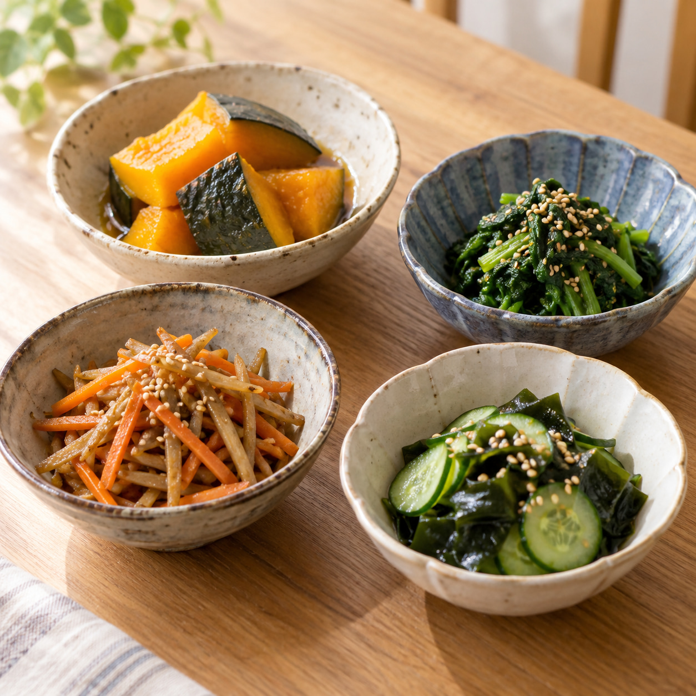
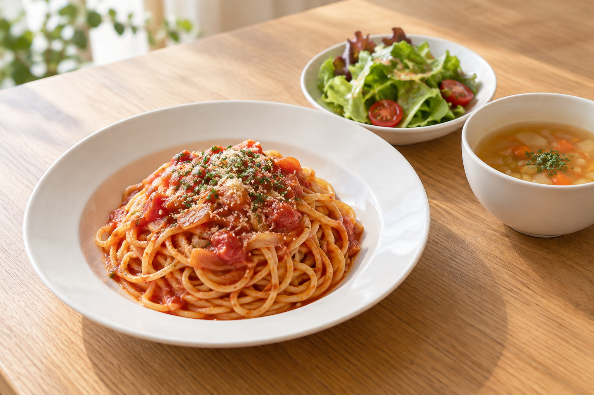
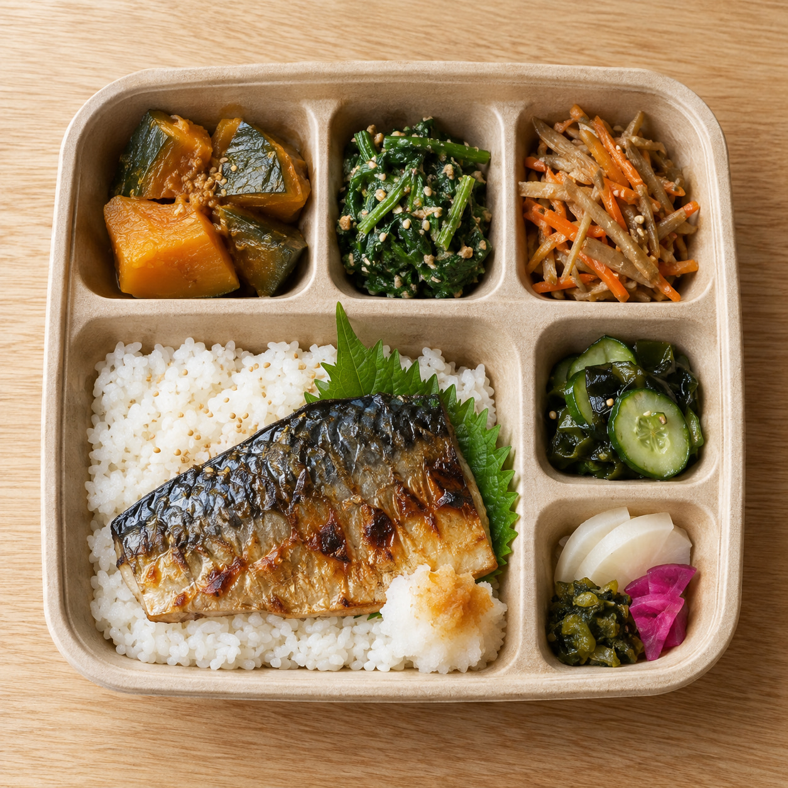
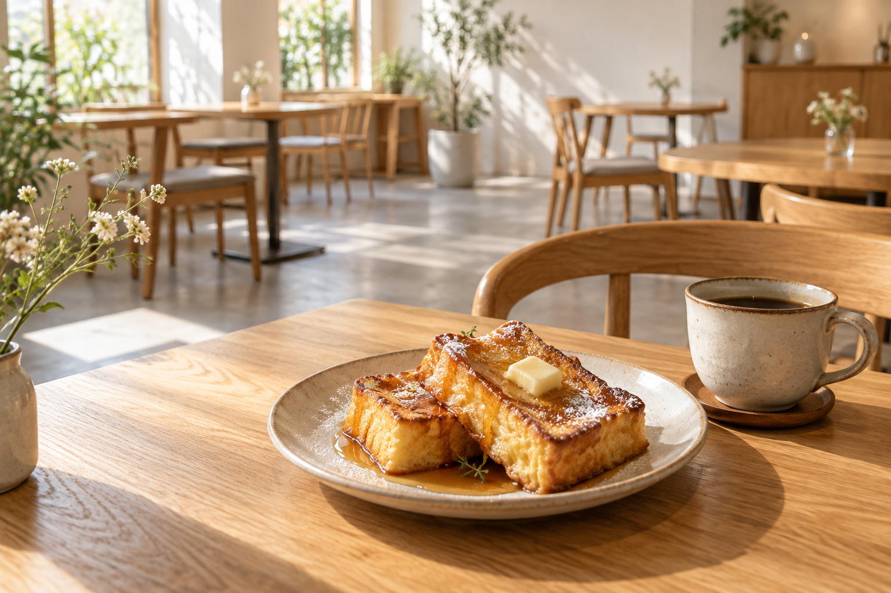

主菜ひとつに、小鉢が5品ほど
公式に掲載されている献立は、いつも「主菜・副菜5品前後・漬物・ご飯・お味噌汁」という組み立てです。ご飯はおかわりが1杯までできることも明記されています。
一皿では足りない、いろいろ少しずつ食べたい、という日に向いています。
CAFE ORSETTO ／ 秋田市外旭川
主菜がひとつ、小鉢がいくつか、漬物とご飯とお味噌汁。献立は毎週入れ替わります。平日の午後はカフェタイム。秋田市外旭川の、2階にあるお店です。
※ 背景は、AIで生成したイメージ画像です。実際のお料理とは異なります。
STRENGTHS
以下は、お店の公式Instagramで確認できる内容をもとに整理したものです。
公式に掲載されている献立は、いつも「主菜・副菜5品前後・漬物・ご飯・お味噌汁」という組み立てです。ご飯はおかわりが1杯までできることも明記されています。
一皿では足りない、いろいろ少しずつ食べたい、という日に向いています。
週替わり膳も週替わりパスタも、毎週の献立が公式Instagramで公開されています。主菜も副菜も、週ごとに入れ替わります。
何度行っても同じものが出ません。近所の方が通い続けられます。
平日は14:00〜17:00がカフェタイムとして案内されています（ラストオーダー16時）。ランチの時間帯に比べてゆったりしている、とお店自身が書いています。
食事どきを外して、ゆっくり過ごしたい人のための時間が用意されています。
WHAT THEY CARE ABOUT
CAFE ORSETTOの公式Instagramには、料理の写真と一緒に、お願いごとが毎回ていねいに書かれています。そこから、このお店が何を大事にしているかが見えてきます。
ランチのお時間が11時〜14時ですが、なくなり次第ランチ終了となります。
インスタのストーリーにてなくなった旨更新をさせていただきます。
作り置きを増やして売り切れを防ぐのではなく、なくなったらその日は終わり。そのかわり、売り切れたことをその日のうちに知らせる。献立も、毎週きちんと写真付きで公開されています。
混雑時は90分制、予約の時間から20分過ぎると次の方を先に案内する、といった案内も明記されています。来てくださる方にも、待っている方にも、同じだけ気をつかうという姿勢が、文章の端々に出ています。
※ このセクションは、公式Instagramに書かれている内容だけをもとに整理しています。創業の経緯や店主の経歴は公式媒体で確認できなかったため、掲載していません。
SIGNATURE
公式Instagramで最も多く紹介されているのが、この「週替わり膳」です。毎週、献立の写真とともに内容が公開されています。

※ AIで生成したイメージ画像です。
ご飯はおかわりが1杯までできます。価格は公式媒体で確認できなかったため、掲載していません。お店へ直接お問い合わせください。
※ ランチの時間帯（11:00〜14:00）は、大人お一人様につき週替わり膳または週替わりパスタのご注文をお願いしている、とお店が案内しています。ドリンクのみ、ケーキのみでのご利用はお断りする場合があるとのことです。
OTHER CHOICES

膳と同じく、毎週内容が入れ替わります。スープとサラダが付くことが公式に案内されています。公開されていた例は、ナポリタンや明太子スパゲッティでした。
※ 価格は公式媒体で確認できませんでした。

1,200円（税込）
中身は週替わり膳の食材がメインです。3日前までに、お電話でのご予約が必要です。受け渡しは当日10時半から。夏場（7月〜9月）は販売されません。
※ テイクアウトのみで、配達はありません。中身の変更はできません。Instagramのダイレクトメッセージでは受け付けていないとのことです。
HOW TO SPEND
11:00 ／ 予約して
ご予約ができるのは11時のみ、お電話でのみ受け付けています。席を押さえておきたい日に向いています。予約の時間から20分過ぎると、次の方が先に案内されます。
11:00〜14:00 ／ ランチ
なくなり次第終了です。売り切れたときは、その日のうちにInstagramのストーリーで知らせています。出かける前に見ておくと、空振りを避けられます。
14:00〜17:00 ／ 平日のカフェ
平日のみのカフェタイムです。ラストオーダーは16時。ランチの時間に比べてゆったりしている、とお店が書いています。

※ AIで生成したイメージ画像です。公式Instagramでは、フレンチトーストが「オーナー自慢」として紹介されています。
CAFE ORSETTOには、来る前に知っておいたほうがいいことがいくつもあります。予約は11時のみであること。ランチはなくなり次第終わること。ランチの時間はお食事のご注文をお願いしていること。カフェタイムは平日だけであること。お弁当は3日前までであること。
どれも公式Instagramに書かれていますが、初めての方が、来る前に全部読んでいるとは限りません。知らずに来て、入れなかったり、お断りすることになったりするのは、どちらにとっても残念な形です。
そこで、5つの質問に答えるだけで、自分に合った来店の仕方が分かる案内を試作しました。下のボタンから実際に動かせます。
5つの質問に答えると、おすすめの来店の仕方をご案内します。所要1分ほどです。
質問 1 / 5
予約が要る日なのか、何時に行けばいいのか、出かける前に分かります。知らずに来てお断りされる、という形を減らせます。
「予約は11時だけですか」「今日ランチありますか」といったお電話の内容を、ページ側で先に答えられます。
この試作は、お店側で毎日更新する仕組みを一切使っていません。一度置けば、手を入れずに動き続けます。
案内の文言が、お店の実際の運用と合っているかどうか。ご確認いただいたうえで、文言はいくらでも書き換えられます。
※ この試作の案内文は、公式Instagramに書かれている内容をもとに作っています。実際の運用と異なる点があれば、お知らせください。すぐに直します。
INFORMATION
※ 営業時間・定休日・お弁当の内容は、お店の公式Instagramに掲載されている情報をもとにしています。最新情報は店舗の公式案内をご確認ください。
毎週の週替わり膳と週替わりパスタの内容、その日のランチが終わったかどうかは、お店の公式Instagramで知らせています。